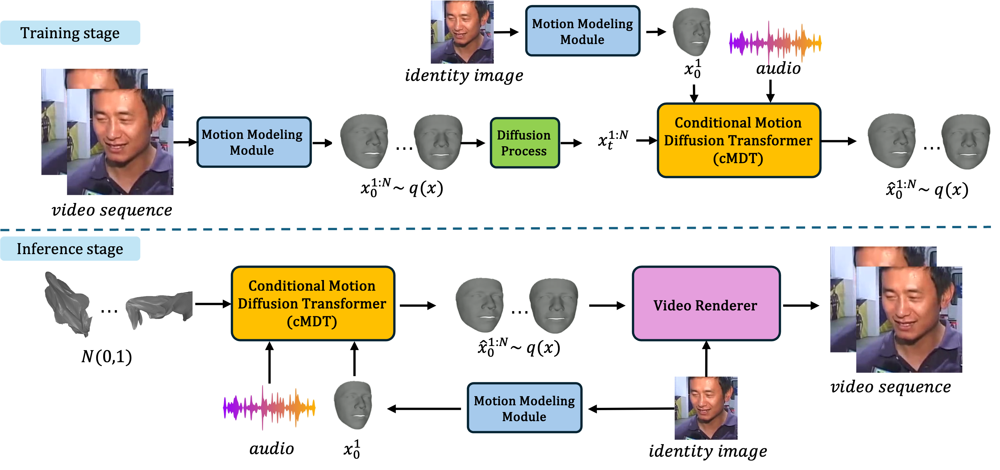
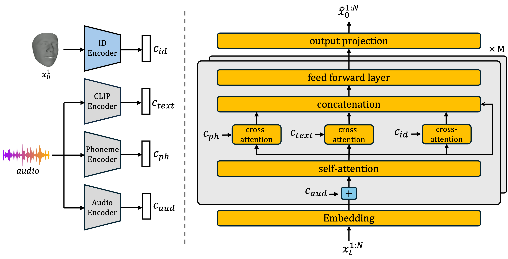

We propose Dimitra, a novel framework for audio-driven talking head generation, streamlined to learn lip motion, facial expression, as well as head pose motion. Specifically, we train a conditional Motion Diffusion Transformer (cMDT) by modeling facial motion sequences with 3D representation. We condition the cMDT with only two input signals, an audio-sequence, as well as a reference facial image. By extracting additional features directly from audio, Dimitra is able to increase quality and realism of generated videos. In particular, phoneme sequences contribute to the realism of lip motion, whereas text transcript to facial expression and head pose realism. Quantitative and qualitative experiments on two widely employed datasets, VoxCeleb2 and HDTF, showcase that Dimitra is able to outperform existing approaches for generating realistic talking heads imparting lip motion, facial expression, and head pose.
Pipeline

Model Diagram

Video examples
1. High resolution video results
Example videos generated on Vox upscaled with GFPGAN
Example videos generated on Vox upscaled with GFPGAN
Example videos generated on Vox upscaled with GFPGAN
Example videos generated on HDTF with high-resolution renderer
Example videos generated on HDTF with high-resolution renderer
Example videos generated on HDTF with high-resolution renderer
2. Comparison against recent methods (video obtained from the methods website)
Dimitra (left) VS EMOPortrait (right) .
Dimitra (left) VS VASA (right) .
Dimitra (left) VS EMO (right) .
1. Comparison with other methods (video obtained using the method code)